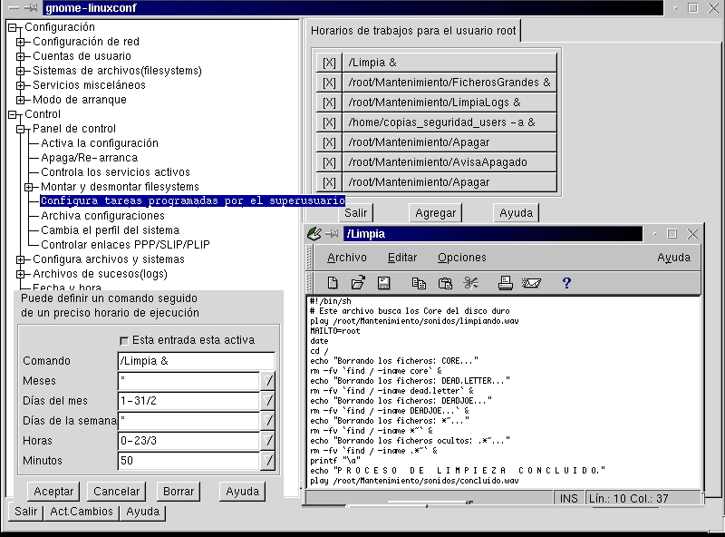

Por supuesto existen más modos de teclas, pero éstas no
se verán en el tutorial.
Las combinaciones más usadas son:
Algunos de los más conocidos son el crond, el atd y el pppd. Curiosamente, los archivos terminados en -d suelen ser demonios. Su uso suele estar bastante bien documentado.
Veremos, a modo de ejemplo, el uso el uso de at.
El comando at te ayudará a planificar la ejecución de ciertas tareas. Puedes, por ejemplo, dejar para las horas nocturnas los trabajos que, por su empleo de recursos o su duración, representen una gran carga para el sistema. En el momento que desees, at se encargará de hacer ejecutar tus tareas pesadas.
Sintaxis:
at [-V] [-q queue] [-f file] [-m] fecha_y_hora
at -c tarea [tarea...]
Con at se pueden especificar diferentes formatos para especificar la fecha y la hora en que debe activarse. Así, el tiempo se puede especificar en HHMM o HH:MM para llevar a cabo una tarea en el mismo día. También se puede especificar midnight (medianoche), noon (mediodía) o teatime (4 de la tarde). Del mismo modo, se le puede colocar a la hora el sufijo am o pm, para indicar una hora de la noche o del día, por ejemplo 5pm.
Si quieres que tus tareas se ejecuten otro día distinto del que te encuentras, puedes darle la fecha en la forma 'mes día' por ejemplo, May 27, o si además necesitas especificar el año, en la forma MM/DD/AA o MM.DD.AA. Otra manera de que at sepa el momento en que tiene que actuar es darle la fecha y hora en forma de un signo '+' seguido de un número de unidades de tiempo, ya sean weeks (semanas), days (días) hours (horas) o minutes (minutos). Por ejemplo puedes ejecutar algo a las 6 de la tarde dentro de 4 días, es decir 6pm+4 days, o mañana a las 8 de la tarde, 8 pm tomorrow. Hay muchas combinaciones posibles.
at devuelve un número, un identificador de tarea, al ser invocado. Este identificador lo podrás usar más tarde para obtener información acerca de la tarea concreta con la opción -c. Por último, hay que decir que no se puede utilizar at cuando los usuarios compiten por los recursos.
Otro demonio muy interesante es el cron. Este demonio permite también la automatización de tareas. Su uso es un poco más complicado que el at, pero merece la pena.
Para activar el cron, escribiremos crontab -e como cualquier usuario (cada usuario puede tener su propio cron) y lo editaremos con el vi o el vim (vi mejorado), con lo que crearemos nuestro crontab. Para comprender mejor el crontab veremos nuestro ejemplo.
Como podemos ver, hay 5 asteriscos. Cada uno de los asteriscos representa:
1º- minutos
2º- horas
3º- Día del mes (1, 2, 15...)
4º- Mes del año (1, 10, 12)
5º- Días de la semana. Se pueden poner con números
o con letras en inglés, en mayúsculas y en minúsculas
(ej.: sat o Sat, para el sábado).
Ej.: * * * * 1-5
(los días de diario)
* * * * mon-fri (los días de diario)
Algunas de los parámetros de crontab:
-u usuario: permite modificar el crontab del usuario
Ej.: crontab -u carlos -e
-e : Permite editar el crontab.
Ej.: crontab -e
Para mayor información, recomendamos ver las páginas 1 y 8 del manual desde la línea de comandos (ej.: man 8 crontab).
Estas tareas se puede realizar con: linuxconf de una forma cómoda
como muestra la imagen:

Escribir el nombre del programa y tras un espacio escribir el signo
de amspersand.
(EJEMPLO:)
nombre_del_programa &
Al hacer esto, el programa 'nombre_del_programa', se ejecutará
realizará las tareas oportunas y una vez concluido retornará.
Ejemplos:
Añadiendo ps -a, verás TODOS los procesos que en
ese momento se están ejecutando, exceptuando los demonios.
Ejemplo de: ps x
Ejemplo de: ps xa
Ejemplo de: ps xaf
Ejemplo de: ps auf
$ ps -a
y veremos qué es y dónde está. Tras esto usaremos el comando kill, que tiene esta sintaxis:
kill [-s señal] pid ...
kill -l [señal]
La opción -s especifica la señal a enviar. La señal debe ser suministrada como un nombre de señal o un número. La opción -l muestra una lista de nombres de señal.
Ejemplo de los procesos ps xa
kill 558
Matará el proceso 'gnuchessx' que está ejecutando el
usuario 'javier'
Otros ejemplo que también podrás hacer es:
Ejemplo 1:
kill -s SIGALRM 87
Manda al proceso con pid 87 la señal SIGALRM
Ejemplo 2:
kill -9 116
Mata a toda costa el proceso 116.
Ejemplo 3:
kill -l
Saca un listado con todos los nombres de señales posibles.
RECUERDA:
Si veías el ejemplo anterior: que puedes ver con ps auf
kill 196
Mata al usuario con el PID 196
kill -9 198
Mata a toda costa al usuario con el pid 198.
pwd = cwd
cwd = Current Work Directory